01
Boris Tane 主张以生产反馈推动软件自我改进
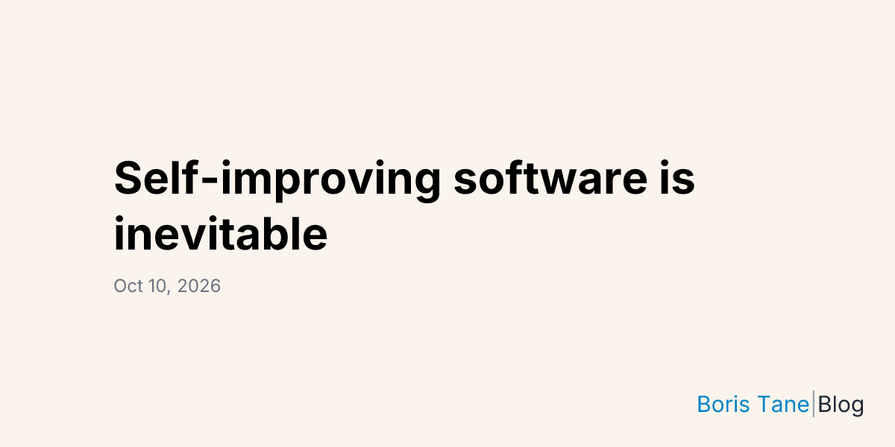
Boris Tane 主张让智能体连接生产遥测、用户行为和支持反馈，生成软件改动建议，缩短由人驱动的反馈回路。他强调，人类仍需定义目标函数和权衡。这是架构愿景，而非全自动生产可靠性的证明；价值在于将可观测信号与产品目标转化为具有明确约束的开发输入。
每天一次，过滤 AI 噪音

Boris Tane 主张让智能体连接生产遥测、用户行为和支持反馈，生成软件改动建议，缩短由人驱动的反馈回路。他强调，人类仍需定义目标函数和权衡。这是架构愿景，而非全自动生产可靠性的证明；价值在于将可观测信号与产品目标转化为具有明确约束的开发输入。
a16z 文章认为，AI 正让财务管理从整理分散数据转向设计工作流、智能体与控制机制。文章涉及自动对账、预测、采购及财务人员自行构建工具，同时强调可审计证据和审批规则。这是包含投资组合案例的投资者视角，但呈现了领域专家成为企业 AI 系统构建者的实际趋势。
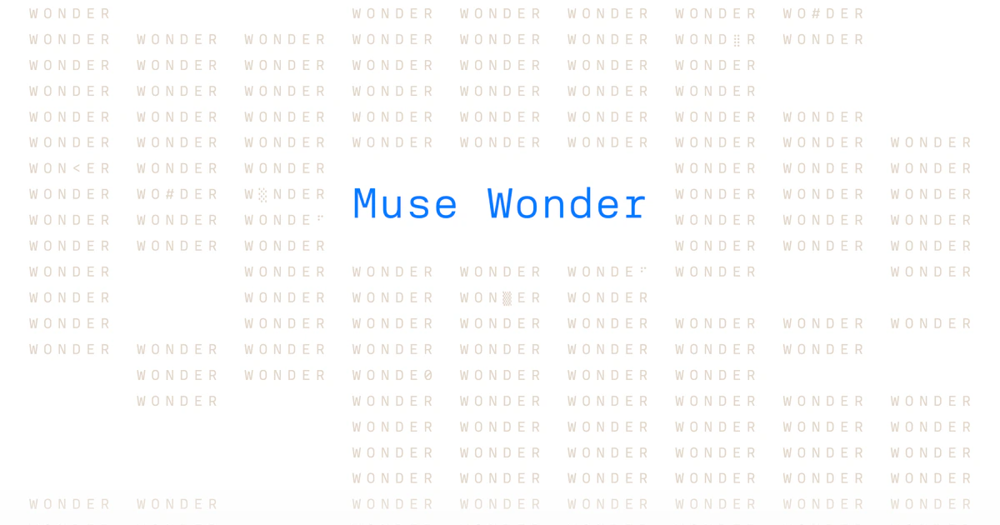
Meta 发布 Muse Wonder 与 Muse Wonder Full，重点是通过 Active Memory 保留上下文、通过 Active Focus 持续执行任务。前者已通过 Meta Model API 和 Muse Code 提供，Full 版本面向 Muse Code 订阅者。Meta 宣称其编程与智能体表现达到前沿水平，并计划逐步接入 Muse。
据《卫报》报道，微软总裁 Brad Smith 呼吁加强 AI 安全监管，包括紧急制动机制，以及对失控智能体受害者承担责任。报道也引用 Satya Nadella 对可观察、可约束系统的主张，并提及英国政府预期采取的行动。这些仍是政策与工程层面的呼吁，并非新法规已经生效。

QGIS 已合并禁止 AI 辅助贡献的政策提案，维护者强调审查负担与保护人类贡献者社区的重要性。提案于 10 月 7 日合并，今天在 Hacker News 引发热议。它揭示了自动化编程的现实约束：更多补丁并不自动带来更多审查能力。安全审计等用途是否适用，仍是讨论中的另一议题。
Edaqa Mortoray 的文章主张，AI 供应商应对系统实施的未经授权访问承担责任。他围绕训练、工具、网络权限与防护措施等设计选择，质疑不可预测行为能够免除责任的说法。这是作者的法律与技术观点，并非法院判决；核心问题是智能体越过授权边界时，责任应如何分配。
微软介绍第三代 Azure Maia 300 的架构，将其定位为围绕大语言模型推理共同设计的软件、芯片、网络、机架与数据中心系统。文章强调，长上下文、工具调用与反复执行会改变智能体工作负载的内存及通信需求。实际价值取决于整体效率能否在供电和散热约束下转化为更多可用推理能力。
Agent37 在 Launch HN 中介绍低成本智能体沙箱，称其通过按突发负载分配资源、使用低成本主机供应商及 gVisor 共享资源降低成本。公司报告客户平均每个沙箱每月支出 0.37 美元。这是供应商自述；方案也存在工作负载兼容性限制，包括 Docker-in-Docker 等场景。
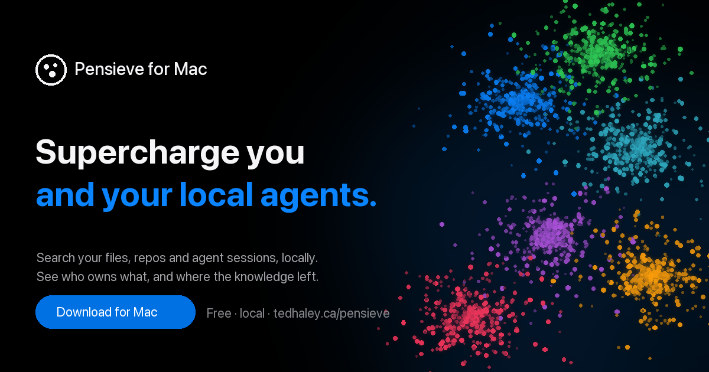
Pensieve 在本地索引代码、文档与智能体会话，并通过 MCP 返回相关片段。项目自测称，每次查找平均工具调用从 grep 方案的 3.4 次降至 2.0 次，在测试仓库中也降低了成本。这些结果来自特定任务与开发者自测；其核心思路是先改善检索，再考虑扩大上下文或增加模型调用。
Vivek Natarajan 宣布，一项关于对话式诊断 AI 的真实世界临床研究发表于《柳叶刀》。这意味着研究进入实际临床流程的证据积累阶段，而非仅依赖基准测试。所采集帖子未提供具体结果数据，因此不能据此推断系统已经具备广泛临床部署条件。
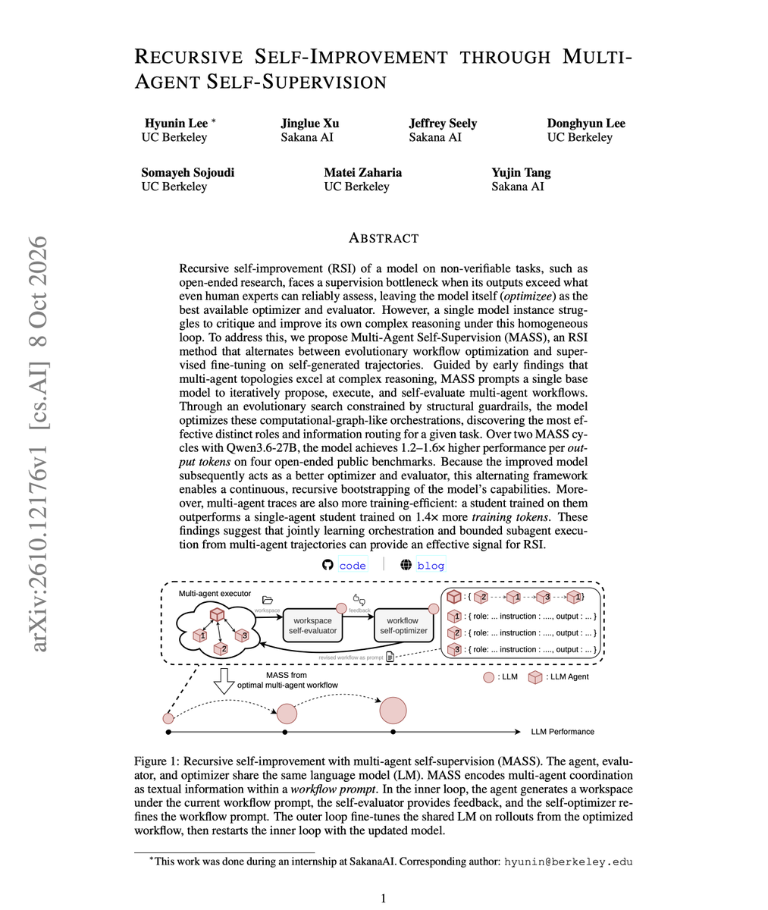
Sakana AI 的 David Ha 介绍多智能体自监督 MASS，探索递归自我改进。公告关注开放式研究中的监督瓶颈：任务复杂到人类难以可靠评价时，能否借助群体智能继续改进。帖子获得较高关注，但采集到的内容不包含可验证性能数据，也不代表人类监督已经可以安全移除。
Luma 官方展示 Relight Studio，可在保留现有镜头的基础上探索不同光照。它对应制作中的实际需求：保留可用构图，同时调整视觉处理。该内容属于产品演示，没有提供质量或延迟对比数据；值得关注的是生成式工具向可控、可迭代编辑流程延伸。
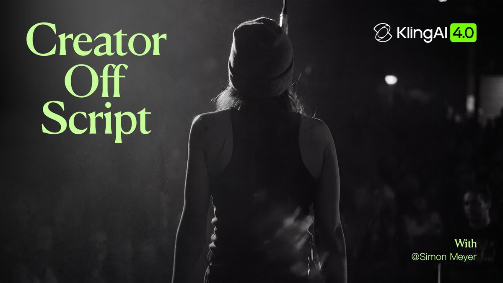
可灵官方分享 PROMPTR Studios 创意总监 Simon Meyer 使用 Kling 4.0 早期版本制作的音乐视频。公司将其作为新能力进入实际制作流程的案例，但帖子没有披露详细参数或独立质量测评。对创作者而言，值得关注的是工具展示逐渐转向结合创意指导的完整作品。
Thomas Wolf 转发 ManimGX 公告：这是面向智能体、采用 Rust 与 wgpu 核心的三维动画引擎。公告声称相对 ManimCE 有显著速度优势，但采集内容未包含测评方法。它体现了结构化动画生成进入自动化流程的方向，具体价值仍需检验质量和兼容性。
Nathan Lambert 认为，数据产业虽然扩张，强化学习数据质量仍不足，部分数据甚至会强化奖励投机行为。他提出研究可规模化、样本高效的 RL 数据生成方法。这是研究方向而非完成的测评结论，强调监督信号是否可靠以及究竟奖励何种行为，比单纯增加数据更关键。
François Chollet 建议以科学本身作为理解 AI 递归自我改进的参照，将其视为具有目标与资源的系统。该观点受到广泛关注，但属于概念性讨论，不是某个已部署自我改进系统的证据。它有助于将当前研究放在评价机制、资源分配与知识积累的框架中审视。
Gary Marcus 主张区分早期独立语言模型与结合符号式框架、代码解释器的新系统。能力提升可能来自外部工具与验证，也可能来自模型本身。该帖子属于评论而非实验，提醒评估应覆盖完整部署系统，并说明各组件对编程和推理结果的贡献。
François Chollet 表示正在使用 KerasHub、JAX 与 TPU 进行大语言模型后训练实验，并可能开源部分工作。帖子未宣布已经发布训练软件包，也未提供性能提升数据。对关注训练工具链的实践者而言，这是值得跟踪的方向，但应区分未来可能发布的内容与现有可用工具。
Open WebUI 是本次 GitHub 采集中值得关注的 AI 界面项目，支持 Ollama 与 OpenAI 兼容 API 等后端。采集时其星标超过 15.4 万，反映开发者关注度，但不等同于部署质量保证。它提供统一界面探索不同后端；本条属于项目发现，并非新版本发布公告。
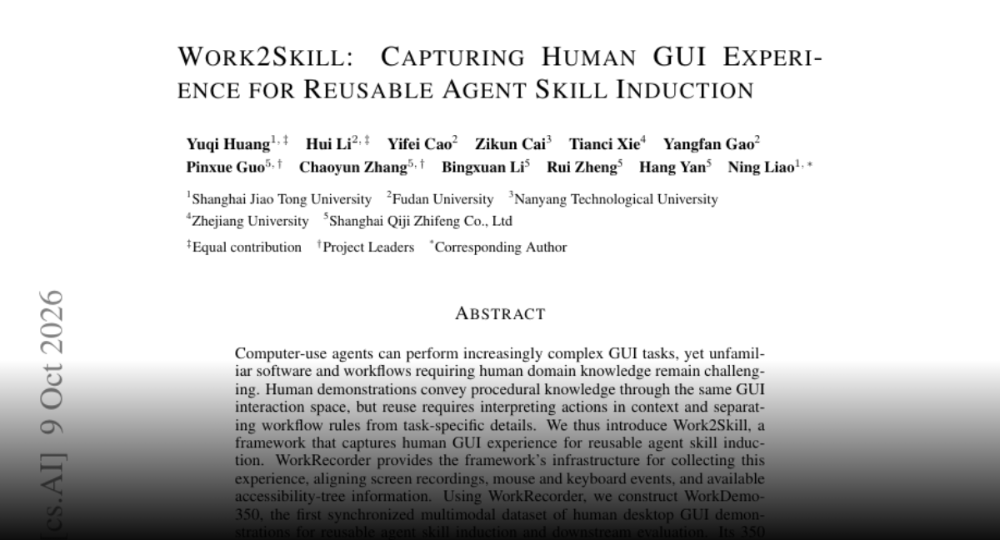
Work2Skill 同步屏幕录制、输入事件与可用的无障碍树信息，将人类操作归纳为可复用技能。其 WorkDemo-350 含 350 条经过筛选的演示，方法提取流程规则、依赖关系与完成检查。作者在 MyPCBench 和 OSWorld-Verified 子集上报告改进，重点是理解操作知识，而非机械重放点击。
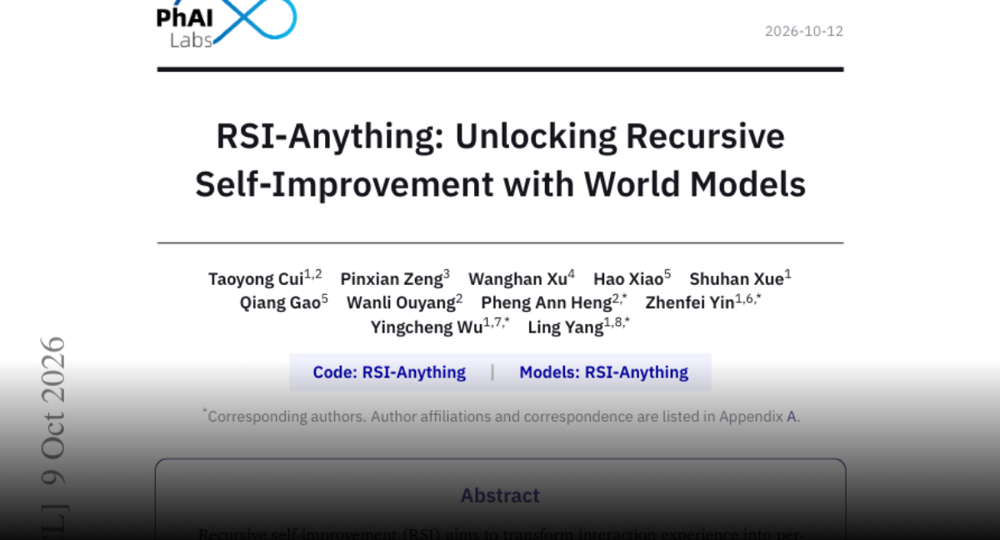
RSI-Anything 使用预测世界模型指导行动和数据选择，并在保留更新前检查策略与模型的兼容性。作者报告，在相近测试使用量下，代码修复成功率从静态验证器的 26.3% 提升至适应后的 31.2%，并评估了 GUI 与科学任务。其贡献是可检验的预测、反馈和更新循环，泛化范围仍以实验为限。
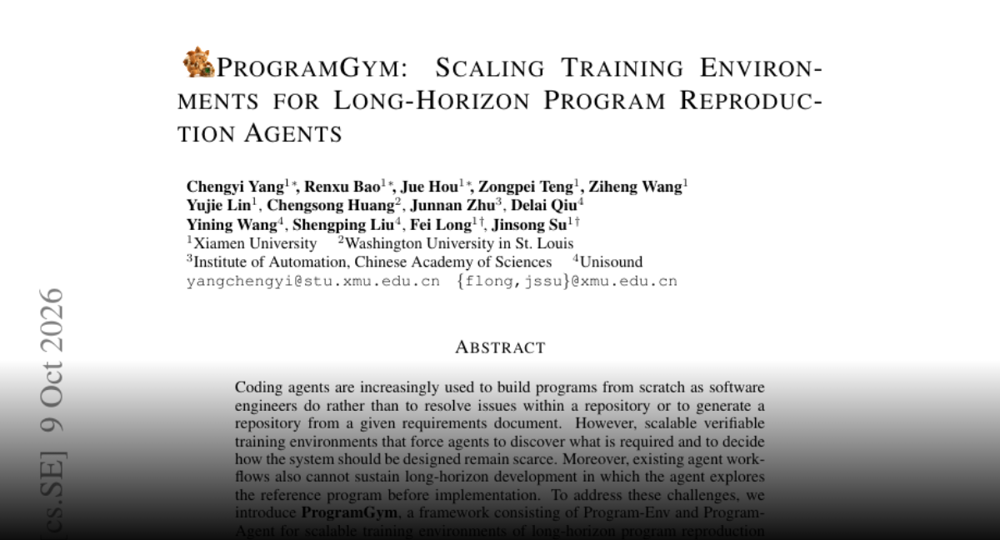
ProgramGym 将可验证程序复现环境与分析、实现、审查工作流结合，构建了覆盖 C、C++、Go、Rust 的 1,648 个环境，并用反馈修复沙箱及黑盒测试。作者报告微调和工作流均改善 ProgramBench 表现。其目标是训练智能体发现参考程序行为并持续开发，而不仅是解决孤立的仓库问题。
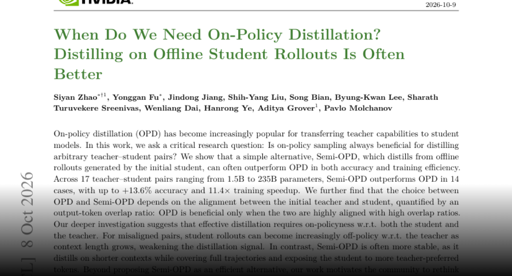
一项蒸馏研究发现，使用初始学生模型离线轨迹的 Semi-OPD 在 17 对师生模型中的 14 对上优于在线策略蒸馏。作者以输出 token 重叠率刻画师生对齐程度，并报告适用组合上的精度和效率收益。结论是应根据模型兼容性选择策略，而非默认持续采样学生轨迹总是更好。
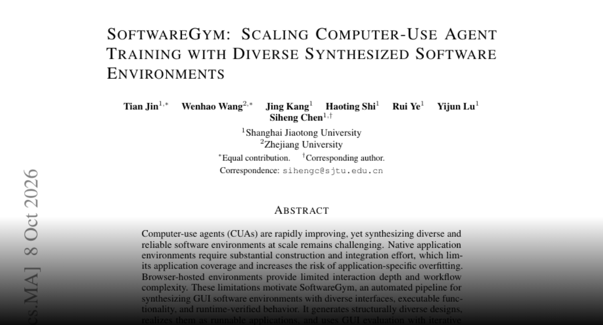
SoftwareGym 自动生成 GUI 应用，通过运行评估和迭代修复构建训练环境。作者报告跨十二类的 182 个应用，平均 GUI 任务通过率为 91.5%；使用相关轨迹训练后，OSWorld Pass@3 从 41.39% 升至 56.97%。其方向是提供多样、可执行且具备流程深度的训练场景。
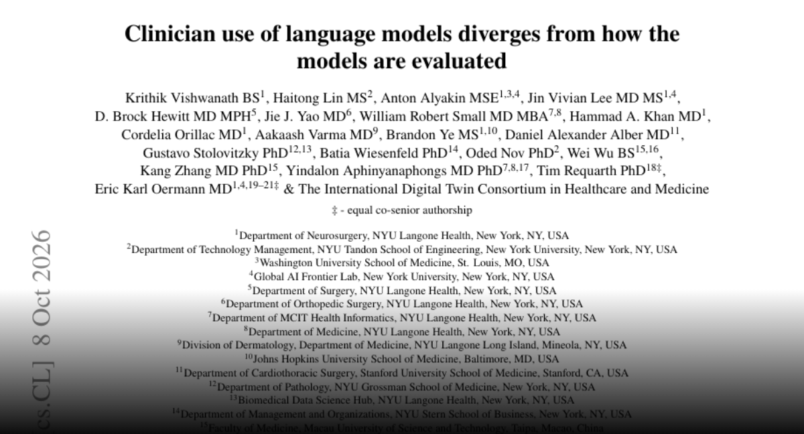
研究分析了 6,342 名临床人员的 127,833 条请求，发现实际使用与公开基准明显错位。文书、行政和知识检索占近三分之二，诊断仅占 3.7%。在 58 个基准中，任务分布与真实使用的中位重合度仅为 31%。作者主张按照实际工作流及信息不完整的问题评估部署准备程度。
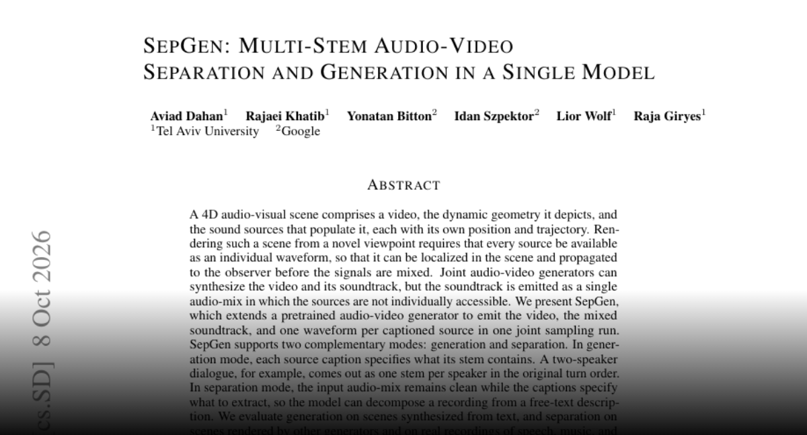
SepGen 扩展音视频生成器，在一次采样中输出视频、混合音轨及文本指定声源的独立波形，也支持以文字描述分离录音。作者评估了生成场景、其他模型输出和真实语音音乐。独立声源便于后期编辑与空间渲染，弥补只有单一混合音轨的限制。
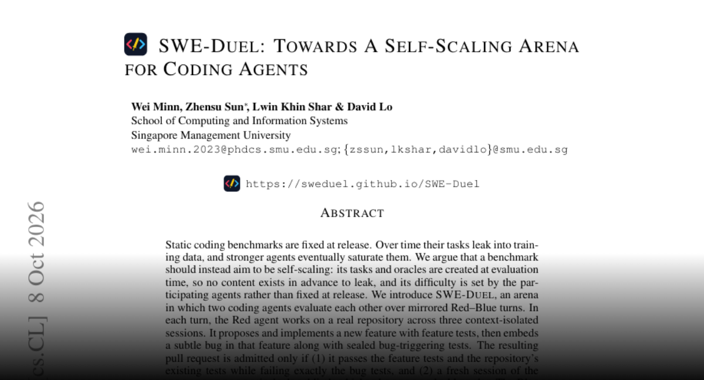
SWE-Duel 让编程智能体轮流创建带隐藏缺陷的仓库改动，并修复对手的改动。任务需先通过有效性与可解性检查。报告的比赛覆盖十一种模型框架组合、十五个仓库和 1,500 回合。动态出题旨在减少静态基准泄漏，并让难度随参赛系统能力增长，同时评价出题与修复能力。